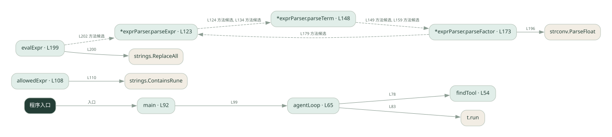

3-1 · 全课程第 41 节
框架工具调用 Agent
038.go
源码快照 eed6e8153bd1 · 静态解析 · 2026-09-10
01 / 要完成的事
把天气与计算工具交给 Agent，模型选择工具，框架或循环执行并回传结果。
02 / 为什么要做
手写循环要处理工具描述、参数和消息回填，框架可以统一这些环节。
03 / 当前代码状态
用自定义工具表和 agentLoop 演示工具分发，没有调用 LangChain，也没有真实大模型请求。表达式由本文件的递归下降解析器处理。
主要展示本地计算、内存状态或模拟流程；是否写文件/启动子进程请看调用表。 本次只做静态解析，没有运行练习，也没有替你填写或修改原代码。
04 / 调用图
打开大图 ↗实线：源码中的直接调用；虚线：函数引用/注册、动态调用或按方法名推断的候选。L 是调用所在源码行号。箭头不表示执行顺序或每次必经；分支、循环、异步调度及框架内部调用需结合源码。灰色是外部/未解析目标，橙色是动态分发；省略 print、len 和常规容器操作以减少干扰。孤立函数可能尚未接入。

先从 main（程序入口） 出发，沿箭头找到本文件函数，再查看外部调用或动态分发。右侧调用清单保留所有静态调用点，能回到原文件逐行对照。
05 / 函数定位
| 函数 / 定义行 | 职责（源码注释） | 内部调用 |
|---|---|---|
findToolL54 | findTool：按名字找工具（对应 Python 里框架自动绑定的「按名分发」） | 未发现显式函数调用（可能直接计算、读写状态或尚未实现） |
agentLoopL65 | agentLoop：极简 ReAct 循环 —— 模拟 LLM 的决策：先调工具，再给最终答案 | findTool, append, fmt.Sprintf, t.run, fmt.Printf |
mainL92 | 以源码函数体为准；下列调用展示其依赖。 | fmt.Println, fmt.Printf, agentLoop |
allowedExprL108 | allowedExpr：只允许数字和 + - * / ( ) . 空格 | strings.ContainsRune |
*exprParser.parseExprL123 | parseExpr：加减（最低优先级） | p.parseTerm, len |
*exprParser.parseTermL148 | parseTerm：乘除（中优先级） | p.parseFactor, len |
*exprParser.parseFactorL173 | parseFactor：数字或括号表达式（最高优先级） | len, fmt.Errorf, p.parseExpr, strconv.ParseFloat |
evalExprL199 | 以源码函数体为准；下列调用展示其依赖。 | strings.ReplaceAll, p.parseExpr, len, fmt.Errorf |
这样做的优点
更容易增减工具和复用调用协议。
代价与局限
框架增加版本依赖和调试层次；工具本身的正确性仍需自己负责。
适用场景
工具数量逐渐增加的助手原型。
不宜直接照搬
极简规则流程，或必须精确控制每一个调用细节且不愿引入框架的项目。
动手检验理解
给出同时需要天气和算术的问题，检查工具结果是否都进入最终回答。
有未实现位置时先预测，再补齐验证。能启动不等于逻辑正确。
查看全部 34 个静态调用 / 引用点
| 调用方 | 目标 | 源码行 | 类型 |
|---|---|---|---|
| agentLoop | findTool | 78 | 调用 |
| agentLoop | append | 80 | 调用 |
| agentLoop | fmt.Sprintf | 80 | 调用 |
| agentLoop | t.run | 83 | 调用 |
| agentLoop | append | 84 | 调用 |
| agentLoop | fmt.Printf | 85 | 调用 |
| agentLoop | fmt.Sprintf | 89 | 调用 |
| main | fmt.Println | 93 | 调用 |
| main | fmt.Println | 94 | 调用 |
| main | fmt.Println | 95 | 调用 |
| main | fmt.Printf | 97 | 调用 |
| main | agentLoop | 99 | 调用 |
| main | fmt.Printf | 100 | 调用 |
| main | fmt.Println | 101 | 调用 |
| main | fmt.Println | 102 | 调用 |
| allowedExpr | strings.ContainsRune | 110 | 调用 |
| *exprParser.parseExpr | p.parseTerm | 124 | 调用 |
| *exprParser.parseExpr | len | 128 | 调用 |
| *exprParser.parseExpr | p.parseTerm | 134 | 调用 |
| *exprParser.parseTerm | p.parseFactor | 149 | 调用 |
| *exprParser.parseTerm | len | 153 | 调用 |
| *exprParser.parseTerm | p.parseFactor | 159 | 调用 |
| *exprParser.parseFactor | len | 174 | 调用 |
| *exprParser.parseFactor | fmt.Errorf | 175 | 调用 |
| *exprParser.parseFactor | p.parseExpr | 179 | 调用 |
| *exprParser.parseFactor | len | 183 | 调用 |
| *exprParser.parseFactor | fmt.Errorf | 184 | 调用 |
| *exprParser.parseFactor | len | 190 | 调用 |
| *exprParser.parseFactor | fmt.Errorf | 194 | 调用 |
| *exprParser.parseFactor | strconv.ParseFloat | 196 | 调用 |
| evalExpr | strings.ReplaceAll | 200 | 调用 |
| evalExpr | p.parseExpr | 202 | 调用 |
| evalExpr | len | 206 | 调用 |
| evalExpr | fmt.Errorf | 207 | 调用 |